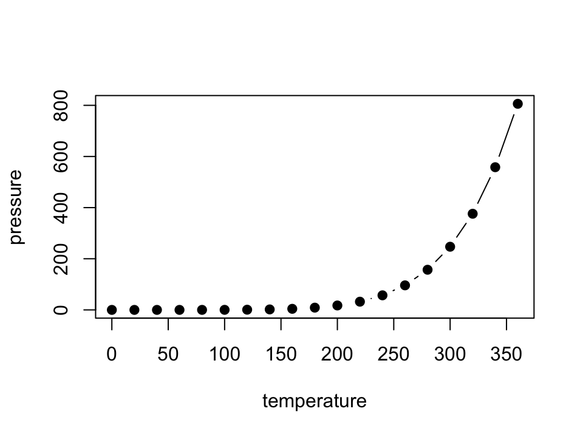

Business Forecasting
setup
All the output formatting is done in the _output.yml file while all bookdown rendering options is done in the _bookdown.yml file.§
library(bookdown)Tips and tricks
Referencing
This is making a figure with a caption and where we center the figure and set the size. Notice, that the figure is automatically numbered according to the chapter number.
plot(pressure,type = 'b',pch = 19)

Figure 0.1: A fig
Now we are able to make a reference to the chunk.
Refer to a chunk: 0.1
Options